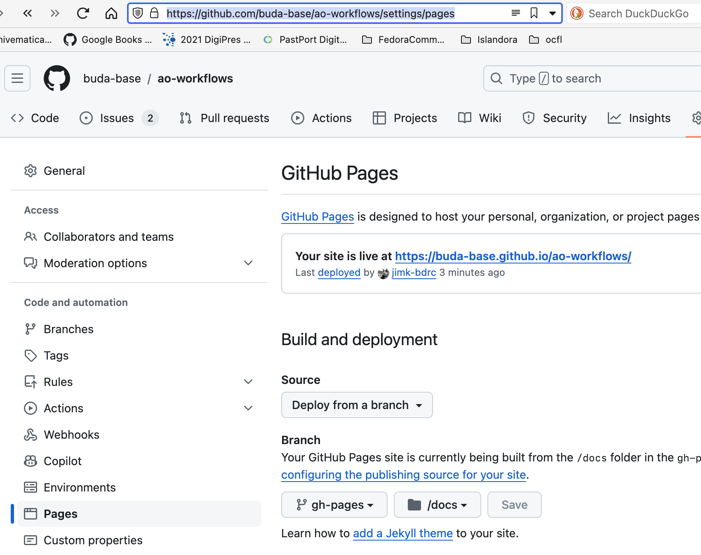
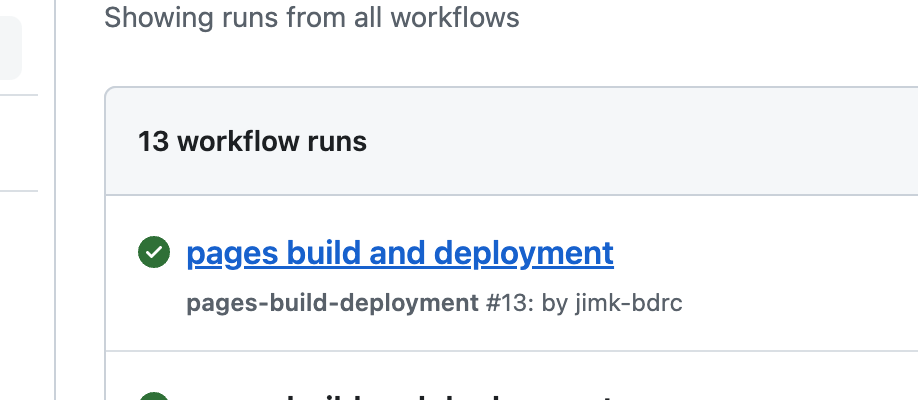
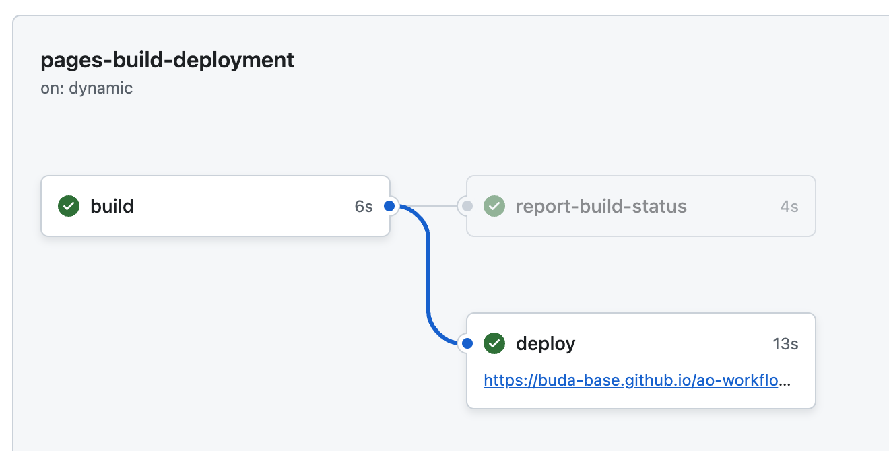

Making this doc¶
Learning ReST, Sphinx, and the GitHub page system required many visits to Github Copilot, as Rest+Sphinx is not a native fit on Github yet.
These sites were useful starting points and guideposts:
Get Sphinx¶
Configure AO Workflows repo for GitHubPages¶
Go to the AO Workflows | Settings | Pages (you can find this in the repo’s settings left nav bar as shown)
and set the
branch to gh-pages and the source to docs/, as shown above.
This creates a Github action that will build the pages when the gh-branch is pushed to. See
Then, simply fetch the gh-pages branch, and work in it.
# Open this project
cd docs
git checkout gh-pages
Build¶
git pull origin gh-pages
# Bring in any doc changes
git merge main gh-pages
# Make the docs
./make.sh
Review¶
# open the generated html in your browser
open build/html/index.html
Commit¶
git commit
git push [origin] [gh-pages]
Review Github progress¶
In the Actions tab, of the AO Workflows repo, you can you can monitor the progress of the build. See :ref:_build-progress for more information.
If the run succeeds, the pages build and deployment link,
will take you to a results page:
which has a link to the deployed pages that you can link to.
.